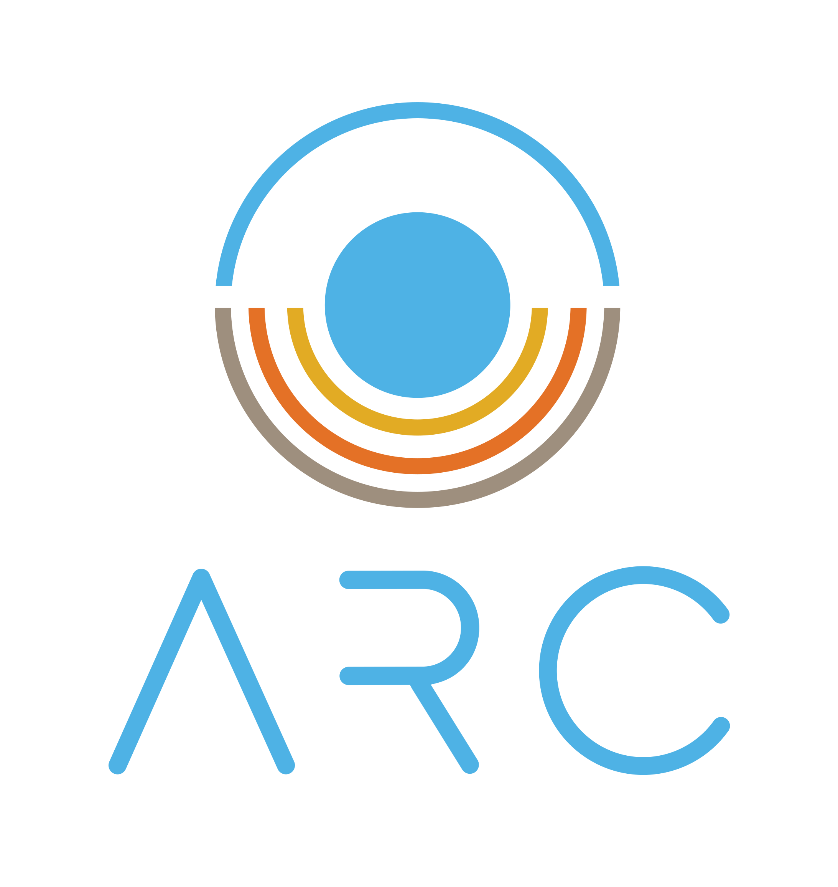

Sci-GaIA Final Event - March 2017
### Agenda
* Partners
* Software & Technologies
* Galaxy
* Arcade
* HPCaaS
* The future...
University of Cape Town
- Founding Member
- Core Services
- Compute
- Block Storage
 North West University
North West University
- Founding Member
- Object Storage
 Inter-University Institute for Data Intensive Astronomy
Inter-University Institute for Data Intensive Astronomy
- Largest investor
- Initial demonstrator projects
- Governance
 University of the Western Cape
University of the Western Cape
- Technical Support
- Compute (Still Implementing)
 UCT eResearch Division
UCT eResearch Division
### Software & Technologies


Open Source
- No licensing costs
- Encourages collaboration
Openstack
- Large community especially in eResearch
- Nectar (Australia)
- Consortium GARR
- Compute Canada
- Hardware agnostic
- Support from big vendors
#### Ceph
* Block Storage
* Object Storage
* Posix Filesystem
* No hardware lockin
* Massively scalable both horizontally and vertically
### Galaxy
Web-based platform for data intensive biomedical research.
#### Progress
* Deployed on ARC
* Used for hackaton during Mozilla Science Global Sprint
* Researchers used for testing
#### TODO
* Roll out to greater community
* Provide support structures for "new" researchers
#### The Team
* Eben van Zyl
* Ciellie jansen van Vuuren
* Dr Thomas Sanko (Eng)
* Dr Charlotte Mienie
* Peter van Heusden
* Warren Jacobus
* Timothy Carr
* Anelda van der Walt
### Arcade
**A**frican **R**esearch **C**loud **A**stronomy **De**monstration Project
#### Overview
* First step into MeerKAT science
* Foundation for operations and collaborations
* Use cases for typical astronomy tasks
* Pathfinder for hardcore radio astronomy operations
#### Mission
* Develop and test end-to-end calibration and imaging pipeline
* Transform MeerKAT data into high quality scientific products
* Demonstrate preparedness and competency in dealing with large data volumes/sets on cloud based systems
* Serve as benchmark for future projects
* Provide a space for scientific and technical collaboration
* Lower the barrier to entry
Team
- Bradley Frank
- John Wu
- Stefan Coetzee
- Timothy Carr
### HPCaaS
Your personal cluster in no time at all
Based on ElastiCluster developed by engineers at the University of Zurich

Startup...
- Create OpenStack Network and Security Groups
- Create a Data disk
- Elasticluster Config
- Start the cluster
Optional Steps
- Expand Cluster
- Stop Cluster
#### Create OpenStack Network and Security Groups
Security Group
```
nova secgroup-create HPC-secgrp "This is a HPC security group"
nova secgroup-add-rule HPC-secgrp tcp 22 22 0.0.0.0/0
nova secgroup-add-rule HPC-secgrp icmp -1 -1 0.0.0.0/0
nova secgroup-add-rule HPC-secgrp udp 1 65535 192.168.1.0/24
nova secgroup-add-rule HPC-secgrp tcp 1 65535 192.168.1.0/24
```
Network
```
neutron net-create HPC-network
neutron subnet-create HPC-network 192.168.1.0/24
```
#### Create Data Disk
```
cinder create --metadata fstype=ext4 fslabel=data dio=yes --display-name HPC_Data 10
```
#### Elasticluster Config
```
[cloud/arc]
provider=openstack
auth_url=https://keystone.arc.ac.za:5000/v2.0
username=[REPLACE_WITH_USERNAME_ARC]
password=[REPLACE_WITH_PASSWORD_ARC]
project_name=[REPLACE_WITH_PROJECT_NAME]
region_name=ZA
request_floating_ip=True
[login/centos]
image_user=centos
image_user_sudo=root
image_sudo=True
user_key_name=[Provide_a_description_of_key]
user_key_private=[/location/of_your_/private_key]
user_key_public=[/location/of_your_/public_key]
[setup/ansible-pbs]
provider=ansible
frontend_groups=pbs_master,maui_master
compute_groups=pbs_clients
ansible_ssh_pipelining=no
[cluster/torque-centos]
cloud=arc
login=centos
setup_provider=ansible-pbs
security_group=[Replace_With_Security_IDS_here]
# CentOS image_id available in the ARC
image_id=aefb815a-1aa2-468e-b64b-bed5c3f42e05
flavor=m1.medium
frontend_nodes=1
compute_nodes=2
ssh_to=frontend
# You need to create a network before hand and attach its network_id below
network_ids=[replace_with_IDs_here]
```
#### Start the cluster
```
elasticluster start torque-centos -n HPC-Cluster
```
#### Optional
Expand Cluster
```
elasticluster resize HPC-Cluster -a 6:compute
```
Stop Cluster
```
elasticluster stop HPC-Cluster
```
#### What's Next?
* Script more of the configs
* Add a easy to use frontend
* Provide Ansible Playbooks for application installation
### The future....
* Identity Federation
* SAFIRE
* EduGain by association with SAFIRE
* RaaS
* Virtual Communities
#### **R**esearch **a**s **a** **S**ervice
* Low end-user requirement (HTML5 Browser)
* Persistent Storage & Configuration
* Catalog of softwares & services
https://github.com/AfricanResearchCloud/RaaS